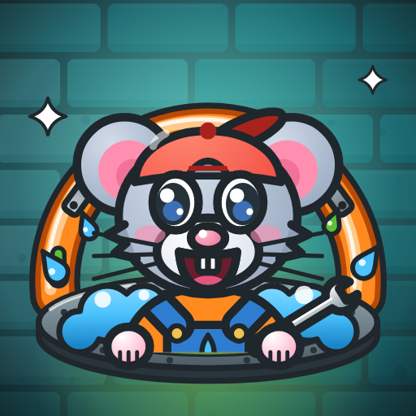
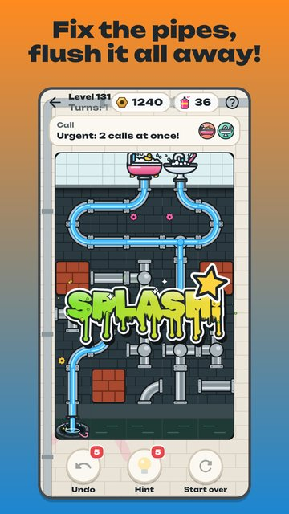

Sewer Pipes
Someone upstairs just flushed, it is pouring outside, and the plant is dumping green chemicals again — time to go down into the sewer!
Turn the pipes so the water from the flat reaches the drain and runs into the sewer without a leak. Lay the way — a loud flush, and a new graffiti on your wall.

- Connect the pipes: tap a pipe to turn it, and the water runs on.
- Toilets, showers, rain, washers, baths, aquariums — and green chemicals you must never mix with water.
- Rusty pipes, dark tunnels and gears, endless levels and a daily emergency.
- The graffiti wall: 40 tags to collect, a plumber rat and lo-fi beats.
- Play offline, in English and Russian.